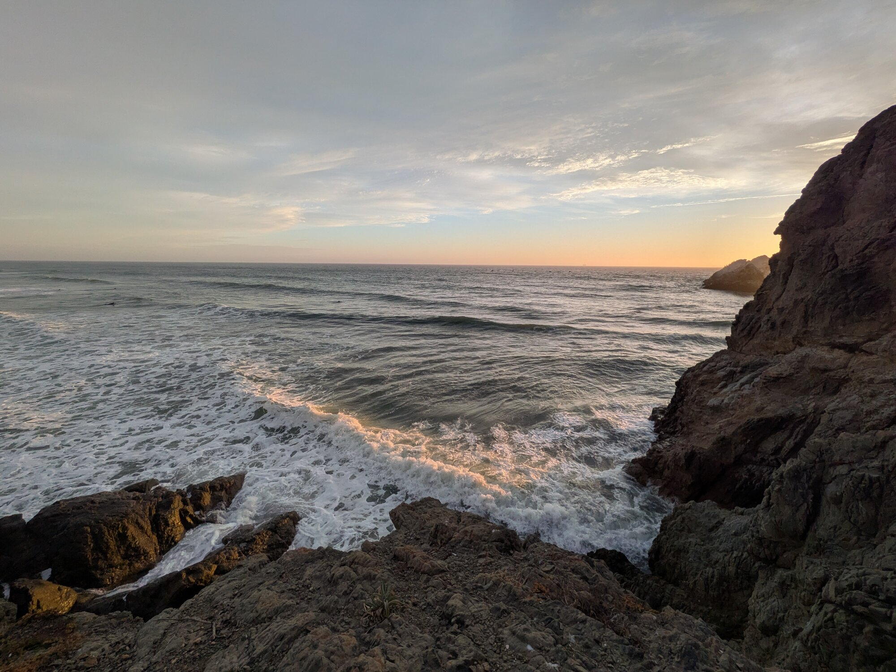

Mt Washington, NHTaken on a walk with my dad and sister near their home in Bavaria, Germany

Did some very minor freeclimbing to reach this spot (northeastern corner of SF)Same walk, after I did some much sketchier climbingAnd ran barefoot on some gravelI think it was worthwhile :)